Research projects: Phylogenetics
BIOL30001: Honours Research Project
Dr Axel Barlow
email: axel.barlow@ntu.ac.uk, office: IBRC115
Research projects: Phylogenetics
- Population trees
- Bayesian Phylogenetics
- Molecular dating
Suggested reading
Suggested reading
Suggested reading (Viral)
Suggested reading (mtDNA)
Population trees
Species trees
- These are phylogenies of species
- Each tip is a different, reproductively isolated species
- Can be inferred from a variety of data types
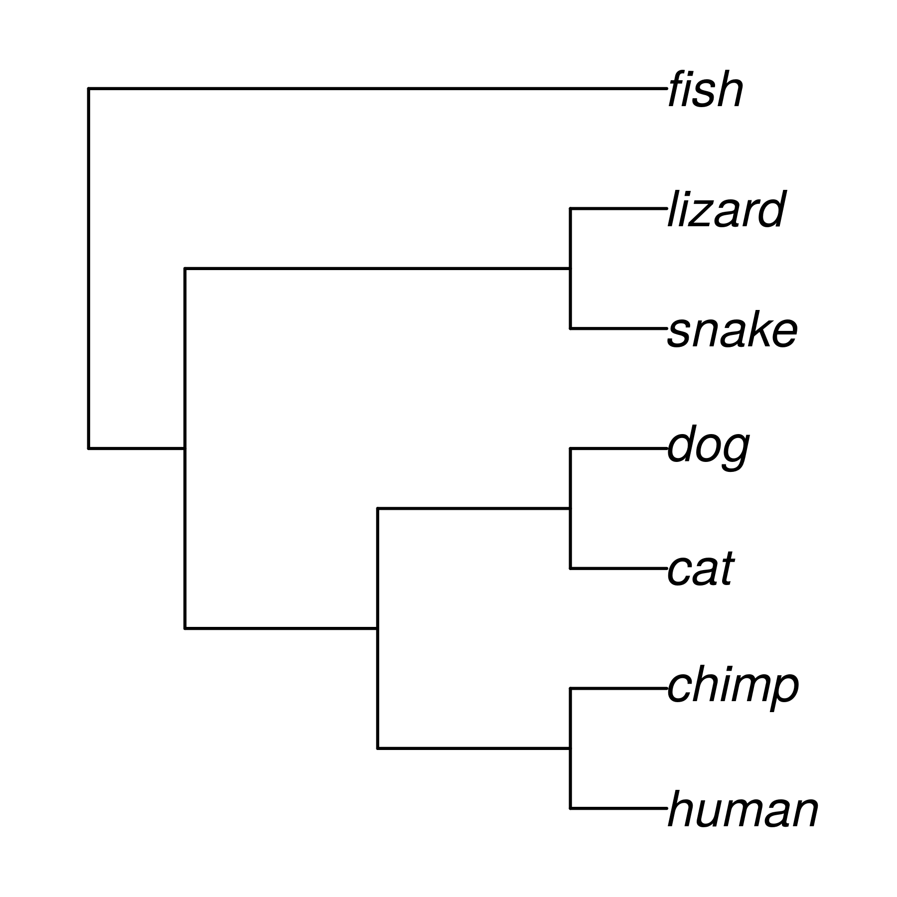
Gene trees
- These are phylogenies of individual loci (e.g. a gene)
- Or related sets of loci (e.g. multigene families)
- Each tip is a different allele (i.e. a gene variant)
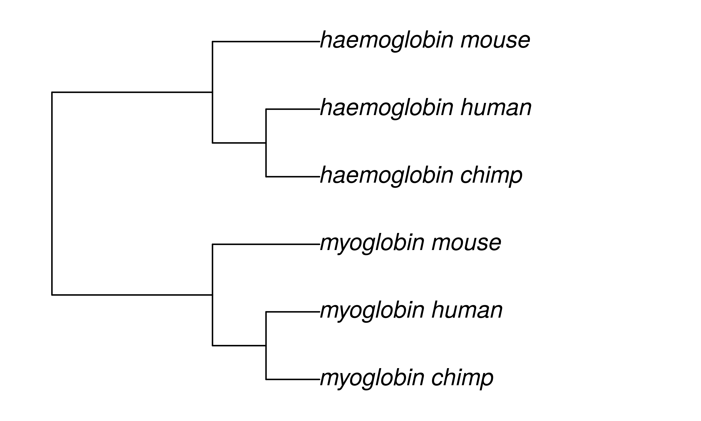
Population-level trees
- Each tip is an individual
- Each node is their most recent ancestor (coalescence event)
- Shows the relationships of individuals and populations
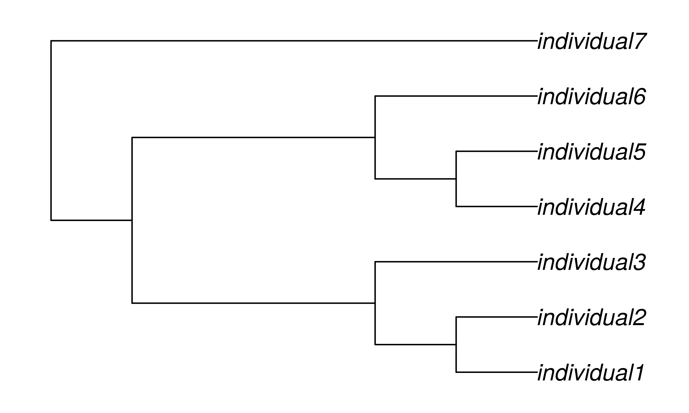
How does that work?

Calculating population-level trees
We'll think about mitochondrial haplotypes (diploid loci 2x more complex)
- Sequence variation provides phylogenetic information
- Similar sequences are more closely related
- Branch lengths are (loosely) proportional to sequence divergence
- Coalescence times also depend on population size
- Described by coalescent theory
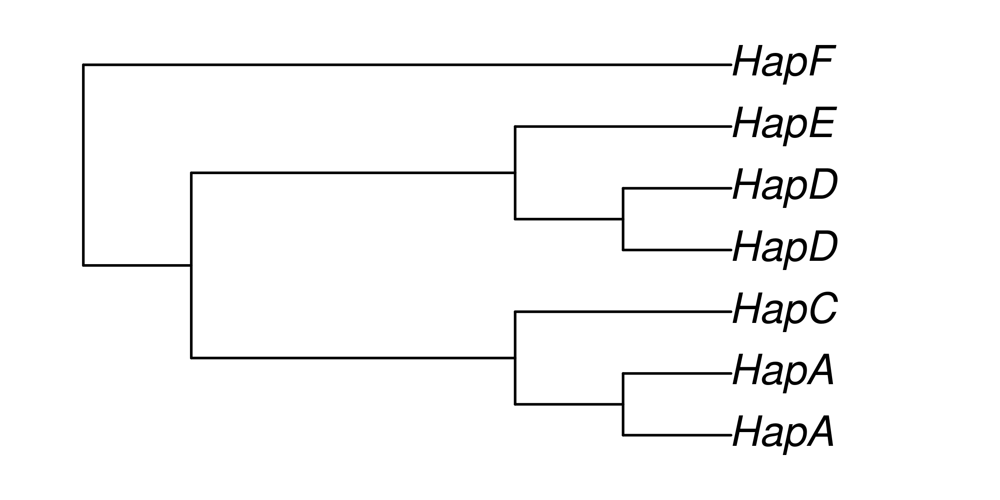
Examples: Dispersal of Barbados anoles
 Anolis roquet, Adamhesim, CC BY 4.0
Anolis roquet, Adamhesim, CC BY 4.0
 Anolis extremus, Postdlf, CC BY SA-3.0
Anolis extremus, Postdlf, CC BY SA-3.0
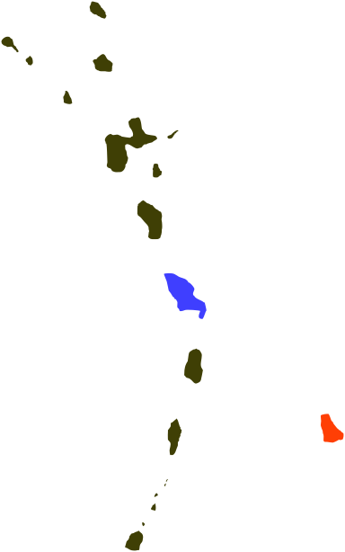
Examples: Barbados anoles
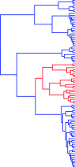
Thorpe et al. Mol phylogenet evol 127 (2018): 682-695.
Examples: viral outbreaks, Ebola virus in West Africa
Suchard, et al. Virus evolution 4.1 (2018): vey016.

Bayesian phylogenetics
Introductory video 1
https://www.youtube.com/watch?v=IqMzYTOf6H0&ab_channel=DataCamp
Introductory video 2
https://www.youtube.com/watch?v=FmzgKXV53-w&ab_channel=DataCamp
The key points
- Bayesian statistics provide a way of describing our prior knowledge of a system as a probability
- We can then update this
prior probabilityby observing some data - The updated probability is called the
posterior probability - Prior and posterior probabilities can also take the form of
probability distributions - These allow us to describe a range of probabilites for different values
- More flexible than a single fixed probability value
Probability distributions
- Imagine you want to predict the number of patients arriving at a hospital in the next week
- You have information from previous weeks that allow you to make an estimate
- But on the Monday...
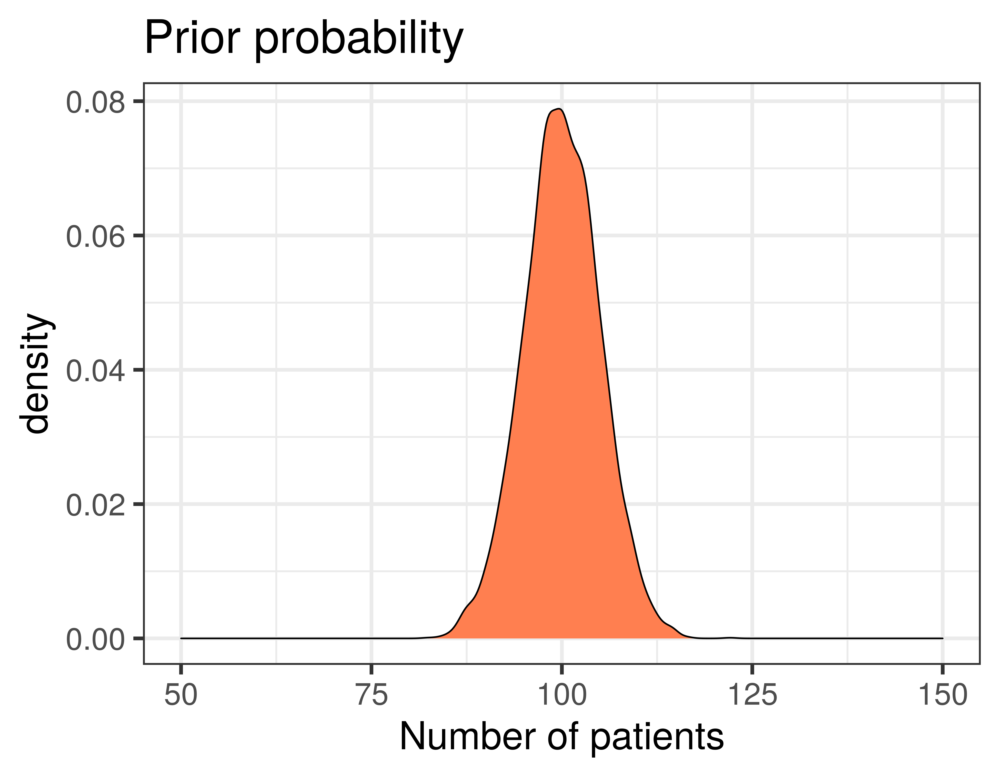
Probability distributions
- Imagine you want to predict the number of patients arriving at a hospital in the next week
- You have information from previous weeks that allow you to make an estimate
- But on the Monday, more patients arrive that you were expecting!
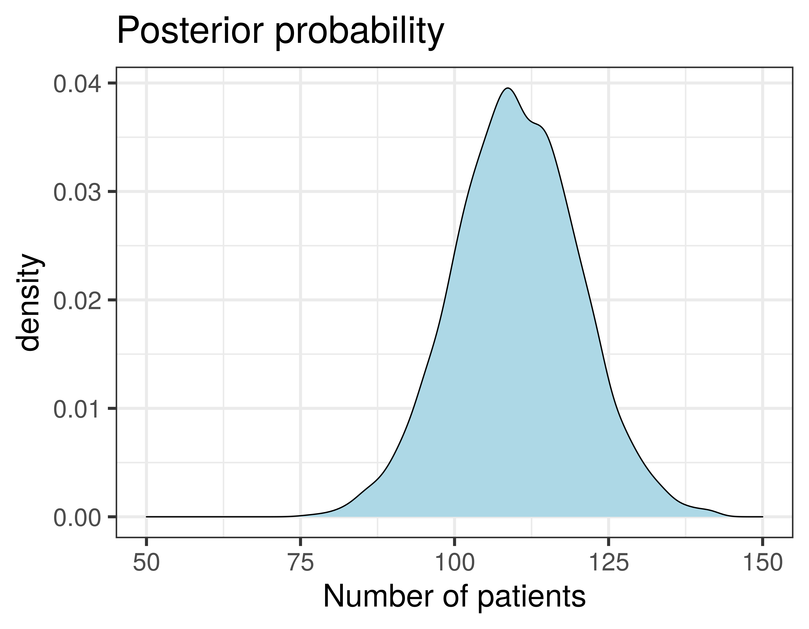
How does this work with phylogenetics?
- The phylogeny is the evolutionary history of the sequences
- We need a
modelof how the sequences evolve - The model has
parametersthat we can assign prior probabilites to - The tree
topology, for example, is a parameter - We can then observe some data, in the form of a
sequence alignment - And calculate the
posterior probabilitiesof our model parameters
An example phylogenetic model
| Parameter | Prior |
|---|---|
| Substitution rate | estimated rate |
| Tr/Tv ratio | estimated ratio |
| Base frequencies | estimated frequencies A,T,G,C |
| Topology | A set of tree topologies |
| Branch lengths | A set of branch lengths |
| Population size | A number of individuals |
Can you compute all those possibilities?
Can you compute all those possibilities?
Example: tree topology
- We would like to calculate posterior probabilities for all possible tree topologies
- Then select the ones with highest probability
How many rooted tree topologies are there?
- 3 sequences = 3 trees
- 4 sequences = 15 trees
- 5 sequences = 105 trees
- 10 sequences = 34,459,425 trees
- 53 sequences = 2.7E+80 (> total atoms in universe)
Computing all possible topologies for modest number of sequences is computationally impossible
Markov chain Monte Carlo (MCMC) sampling
- Start at a tree
- Jump to a nearby tree
- Compare posterior probabilities
- New tree > previous tree
- accept
- New tree < previous tree
- accept proportional to difference
- Repeat (x millions)

MCMC sampling in practise
- The initial moves are likely to have low probability
- This is called
burn in - We rapidly move to a set of parameter values with similarly high probability
- This is called
convergenceorstationarity - Sampling the chain at convergence approximates the true posterior distribution
- This is called the
posterior sample - Since the MCMC steps are not independent, we take 1,000s between every sample
- And we can verify sufficient sampling using the
effective sample size
MCMC sampling in practise
Graphically it looks like this
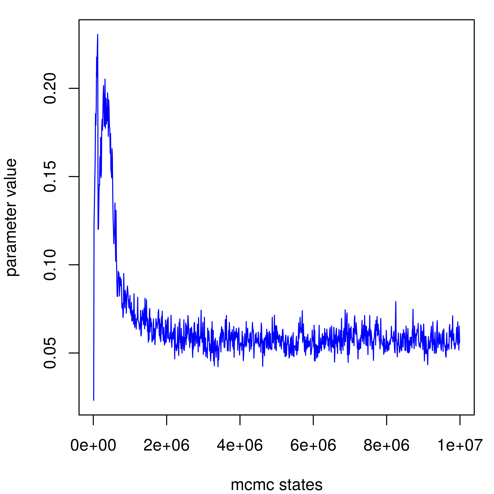

But aren't we also collecting thousands of trees?
Summarising thousands of trees
- The actual result of the analysis is thousands of trees
- The posterior sample of trees
- Typically pick one good one, and annotate with clade posterior probabilities
- Other parameters like branch lengths are averaged across posterior sample
Molecular dating
Branch length are typically scaled to genetic distance
Imagine if they could be scaled to time
Molecular clock hypothesis
- Substitutions seem to occur at an approximately constant rate
- This means genetic distance is proportional to time
- Sometimes the relationship breaks down (divergent lineages, saturation, selection)
- At the population level it generally works well
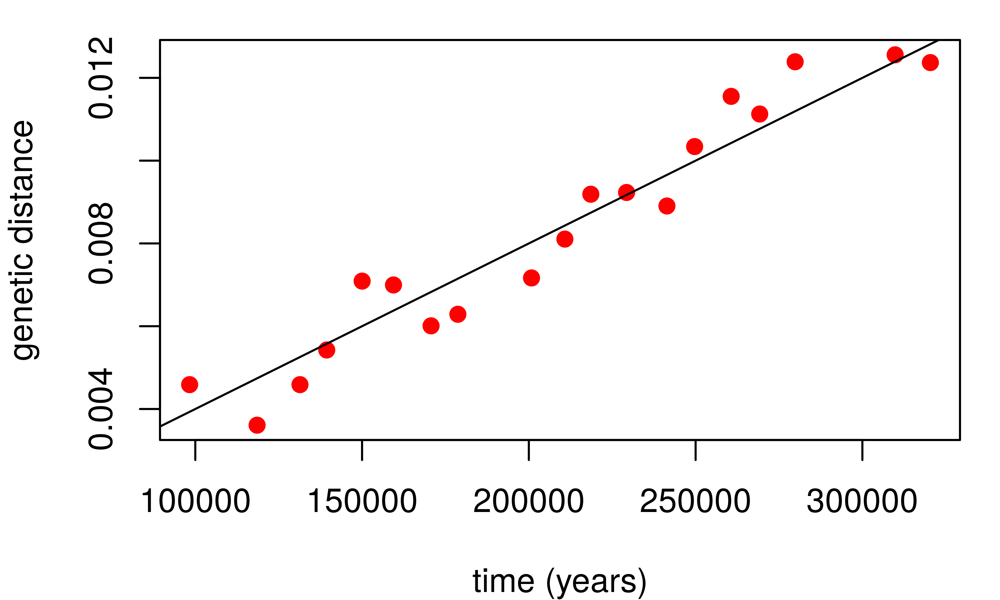
Methods of calibrating the tree
- If we assume a molecular clock, we can use external sources of information to calibrate the tree
- Genetic distance per unit time
There are 3 parameters of interest:
tip agesnode agessubstitution rate
The three parameters are interdependent
- Imagine 3 sequences, sampled at different timepoints
- Genetic distances: A-> B = 0.01; A -> C = 0.015; B -> C = 0.02
- Substitution rate = 0.02 / 2000 = 1E-05 substitutions per year
- Coalescence time B -> C = 0.02 * 1E-05 = 2000
- Age A = (0.02 - 0.15) * 1E-05 = 500
We can assign priors on all 3
- Tip dates: sampling dates, radiocarbon ages, or unknown
- Coalescence times: population divergence times, fossils, or unknown
- Substitution rate: previous estimates, related species, or unknown
Within a Bayesian analysis, as long as we have prior information of some of these, we can calculate posterior probabilities of all parameters
Example: cave bears
- Radiocarbon dates, estimate sub rate and coalescence times
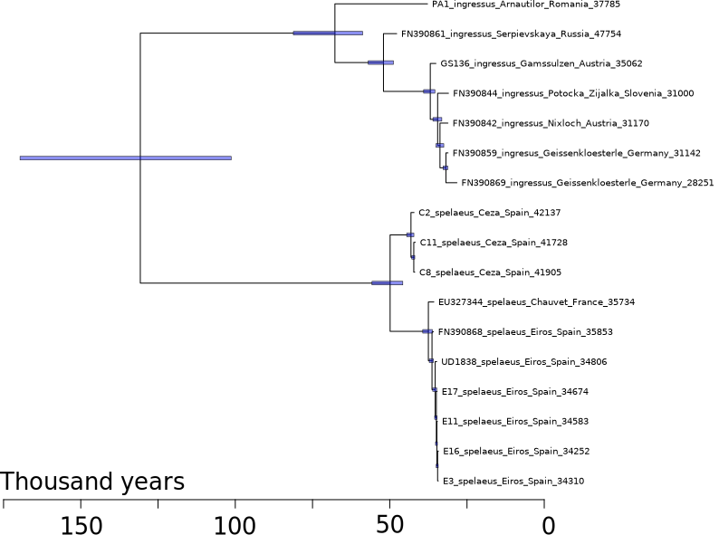
Example: brown bears
- Radiocarbon dates, estimate substitution rate, coalescence times, and an unknown age
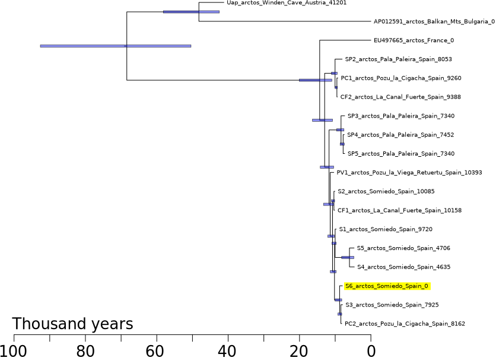
Example: giant pandas
- Radiocarbon dates and root node age, estimate sub rate, other coalescence times
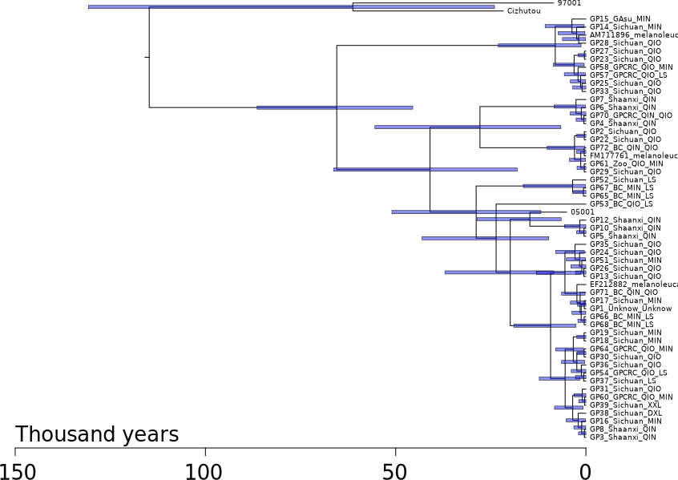
Research projects: Phylogenetics
- Population trees
- Bayesian Phylogenetics
- Molecular dating
Next time
Your turn